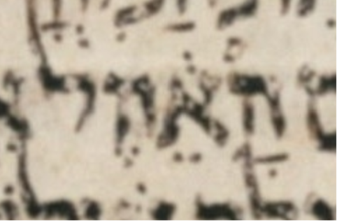

bcv (link to tanach.us)
1k7:45
MPK
הָאֵ֔הֶה
qere
הָאֵ֔לֶּה
at issue
לּ
at issue English
added a dagesh to lamed
folio col line
189B 3 15
The MPK’s ה does not carry a dagesh for the qere’s ל, perhaps because that would be illegal.